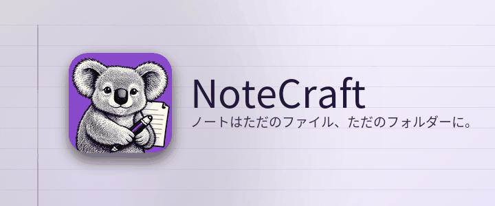

ノートはただのファイル、ただのフォルダーに。
NoteCraft はノートを、あなたがファイルを保存するのと同じやり方で保存します。ノートブックはフォルダー、セクションはフォルダー、ページはひとつのファイルとその画像が入ったフォルダーです。データベースに閉じ込められるものは何もないので、同期ツールがすでに見ているフォルダーはそのまま同期されたノートブックになり、バックアップはコピーひとつで済みます。
このセクションの各ページは、NoteCraft の機能をページそのものの上で見せます。
この段落のどこかをクリックして入力してください。入力をやめて約 1 秒でページは自動的に保存されます。行末で Enter を押すと新しい段落、Escape でその行から抜けます。
最初のページに戻る。
このページは AI モデルが翻訳しました。修正を歓迎します。